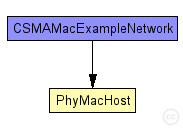
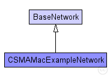

This documentation is released under the Creative Commons license
This documentation is released under the Creative Commons licenseThis example shows how to use MiXiMs CSMA protocol implementation.
The network consists of a number of hosts which represent some kind of switches and a number of hosts which represent clients. At first they build up their routing tables by sending, forwarding (only switches), receiving and evaluating "Hello World" messages. After that phase the clients start randomly "jabbering" with other hosts and the switches only forward the "Jabber" messages to their destination.
The phy layer uses only "SimplePathlossModel" as AnalogueModel and "SNRThresholdDecider" as Decider.
The omnetpp.ini contains the following configurations:
The following diagram shows usage relationships between types. Unresolved types are missing from the diagram. Click here to see the full picture.
The following diagram shows inheritance relationships for this type. Unresolved types are missing from the diagram. Click here to see the full picture.
| Name | Type | Description |
|---|---|---|
| BaseNetwork | network | (no description) |
| Name | Type | Default value | Description |
|---|---|---|---|
| playgroundSizeX | double |
x size of the area the nodes are in (in meters) |
|
| playgroundSizeY | double |
y size of the area the nodes are in (in meters) |
|
| playgroundSizeZ | double |
z size of the area the nodes are in (in meters) |
|
| cmType | string | "org.mixim.base.connectionManager.ConnectionManager" |
connection manager to use |
| wuType | string | "org.mixim.base.modules.BaseWorldUtility" |
world utility to use |
| numHosts | int |
total number of hosts in the network |
| Name | Value | Description |
|---|---|---|
| isNetwork | ||
| display | bgb=$playgroundSizeX,$playgroundSizeY,white;bgp=0,0 |
| Name | Type | Default value | Description |
|---|---|---|---|
| connectionManager.coreDebug | bool |
debug switch for core framework |
|
| connectionManager.sendDirect | bool |
send directly to the node or create separate gates for every connection |
|
| connectionManager.pMax | double |
maximum sending power used for this network [mW] |
|
| connectionManager.sat | double |
minimum signal attenuation threshold [dBm] |
|
| connectionManager.alpha | double |
minimum path loss coefficient |
|
| connectionManager.carrierFrequency | double |
minimum carrier frequency of the channel [Hz] |
|
| world.useTorus | bool |
use the playground as torus? |
|
| node.netwl.stats | bool |
stats switch |
|
| node.netwl.headerLength | int |
length of the network packet header (in bits) |
|
| node.tranl.stats | bool |
stats switch |
|
| node.tranl.headerLength | int |
length of the network packet header (in bits) |
|
| node.sessl.stats | bool |
stats switch |
|
| node.sessl.headerLength | int |
length of the network packet header (in bits) |
|
| node.presl.stats | bool |
stats switch |
|
| node.presl.headerLength | int |
length of the network packet header (in bits) |
|
| node.appl.headerLength | int |
length of the application message header (in bits) |
// //This example shows how to use MiXiMs CSMA protocol implementation. // //The network consists of a number of hosts which represent some kind of switches //and a number of hosts which represent clients. At first they build up their //routing tables by sending, forwarding (only switches), receiving and //evaluating "Hello World" messages. After that phase the clients start randomly //"jabbering" with other hosts and the switches only forward the "Jabber" //messages to their destination. // //The phy layer uses only "SimplePathlossModel" as AnalogueModel and //"SNRThresholdDecider" as Decider. // //The omnetpp.ini contains the following configurations: // //- "General" - three clients in range of each other, no switch, no // propagation delay //- "WithoutPropDelay" - four clients and two switches whereas the switches are // in range of each other and the clients are in range of at // least one switch, no propagation delay //- "WithPropDelay" - same but with propagation delay //- "CollissionMac" - same configuration but the parameters for the CSMAMacLayer // lead to more collisions //- "Perftest" - used with CmdEnv for performance testing (time limited) // network CSMAMacExampleNetwork extends BaseNetwork { parameters: int numHosts; // total number of hosts in the network submodules: node[numHosts]: PhyMacHost { parameters: numHosts = numHosts; @display("p=148,94;b=42,42,rect,yellow;i=device/wifilaptop"); } }
This documentation is released under the Creative Commons license